The quarterly figures contain the most important key figures on the wait list and organ donation and transplantation activity in Switzerland. All data originate from the Swiss Organ Allocation System (SOAS)) operated by the FOPH .
This page is still under development.
Die Wartezeiten bis zur Transplantation werden nicht mehr pro Quartal ausgewiesen, sondern nur noch einmal pro Jahr. Die Berechnung erfolgt nach einer neuen Methodik (siehe Abb. 4.13 Jahresbericht). Die Kennzahlen zu den Wartezeiten pro Organ werden auf dieser Website publiziert.
1. Wait list
Here you will find key figures on the wait list of people in Switzerland waiting for an organ transplant from deceased donors. People who were listed for a living donation are not included in this section.
At the end of March 2024, 1326 patients in Switzerland were waiting for one or more organs from deceased donors. Compared to the previous quarter, this is 9 fewer patients (-0.7 %). 27 patients died on the waiting list in the first quarter of 2024.
1.1 People on the wait list
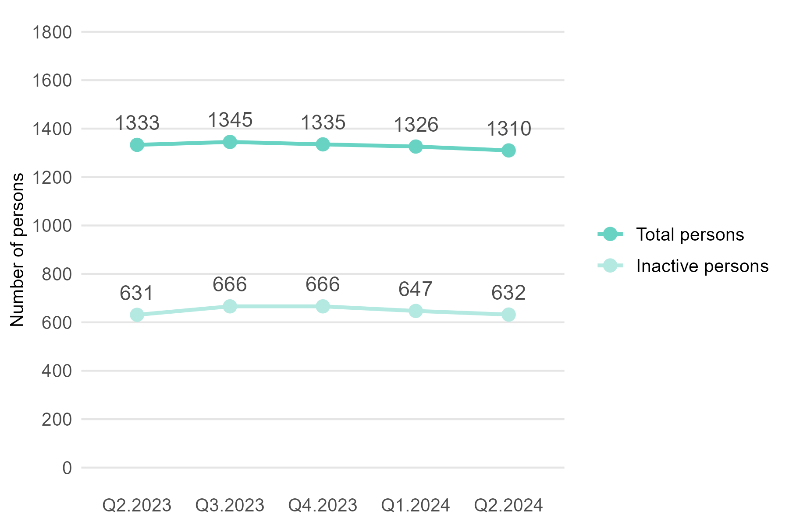
| Indicator | Current quarter | Change on previous quarter |
|---|---|---|
| Number of patients on wait list | 1326 | -9 patients (-0.7 %) |
| Percentage inactive | 48.8 % | -1.1 percentage points |
1.2 People on the wait list by organ
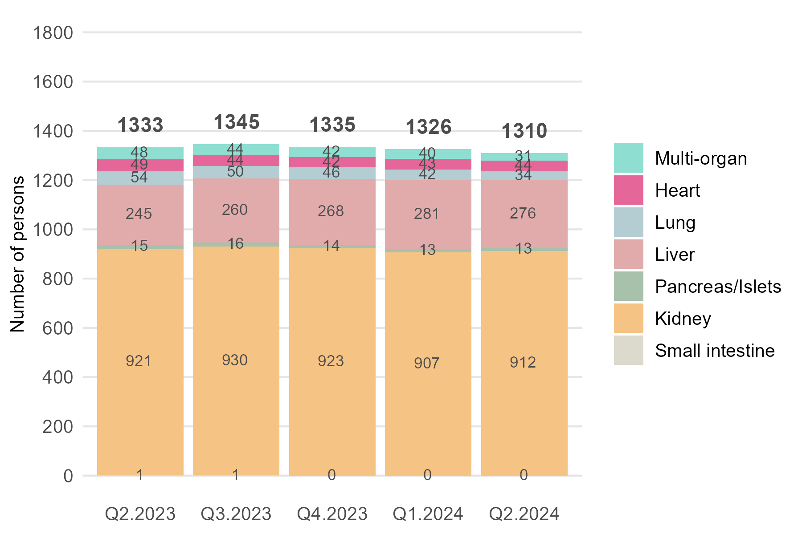
| Indicator | Current quarter | Change on previous quarter |
|---|---|---|
| Number of patients on wait list: | 1326 | -9 patients (-0.7 %) |
| Multi-Organ | 40 | -2 patients (-4.8 %) |
| Heart | 43 | +1 patient (+2.4 %) |
| Lung | 42 | -4 patients (-8.7 %) |
| Liver | 281 | +13 patients (+4.9 %) |
| Kidney | 907 | -16 patients (-1.7 %) |
| Pancreas/islets | 13 | -1 patient (-7.1 %) |
| Small bowel | 0 | +/- 0 patients |
1.3 Events on the wait list
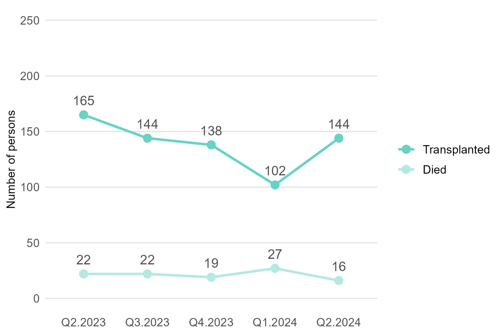
| Indicator | Current quarter | Change on previous quarter |
|---|---|---|
| Number of patients transplanted | 102 | -36 patients (-26.1 %) |
| Number of patients deceased | 27 | +8 patients (+29.6 %) |
In the first quarter of 2024, 102 patients in Switzerland received one or more organs from deceased organ donation. 27 patients died on the waiting list.
2. Organ donation
2.1 People approved for deceased organ donation
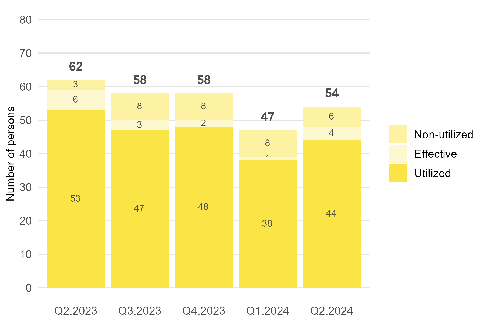
2.2 Deceased donors
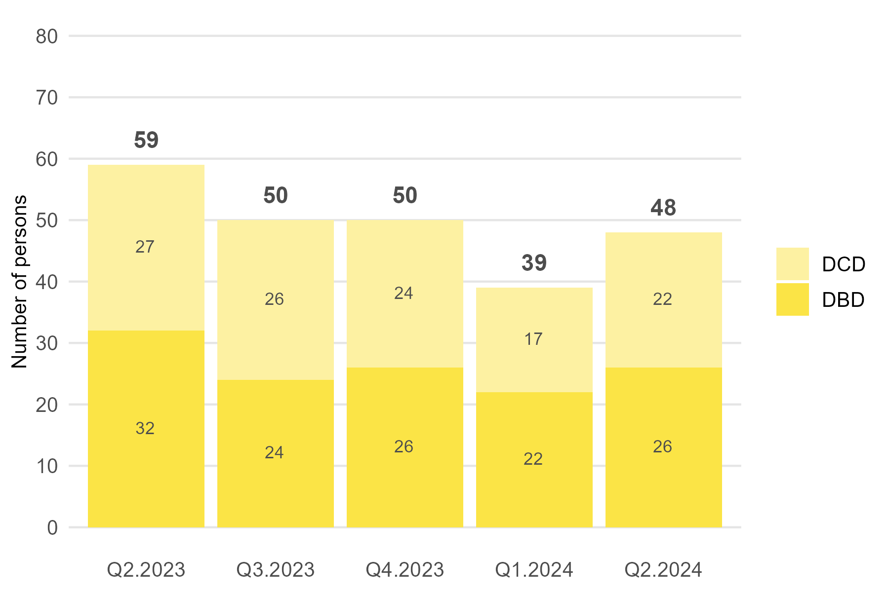
2.3 Organs transplanted from deceased donors
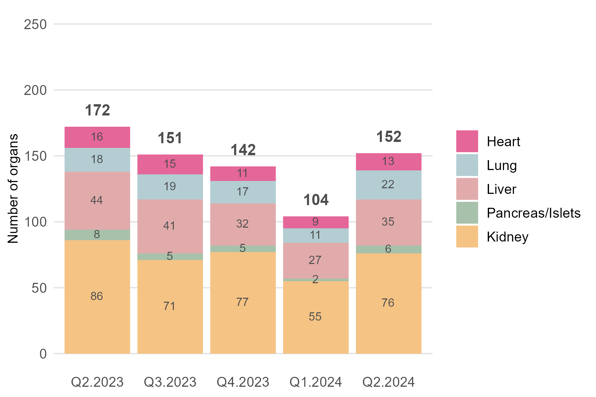
2.4 Organs transplanted per deceased donor

2.5 Living donors
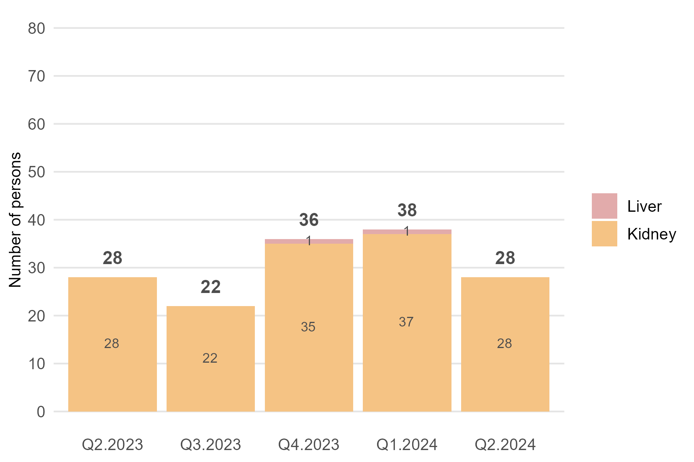
3. Transplants
3.1 Patients transplanted in Switzerland
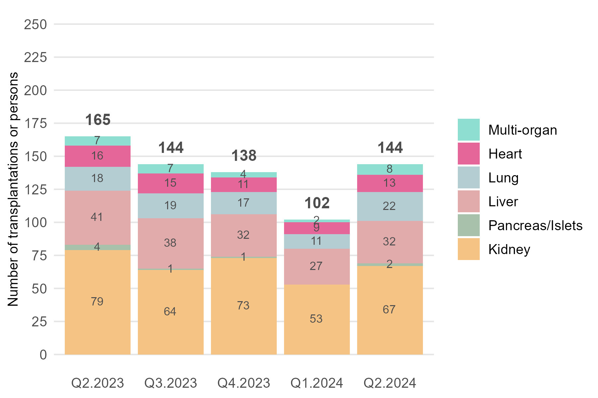 ## 3.2 Patients transplanted in Switzerland with organs from abroad
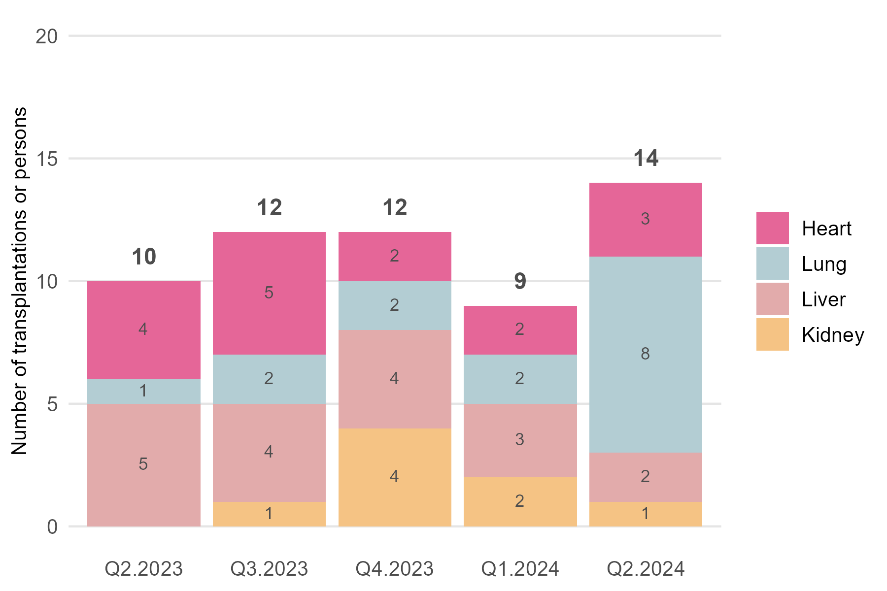
3.3 Patients transplanted abroad
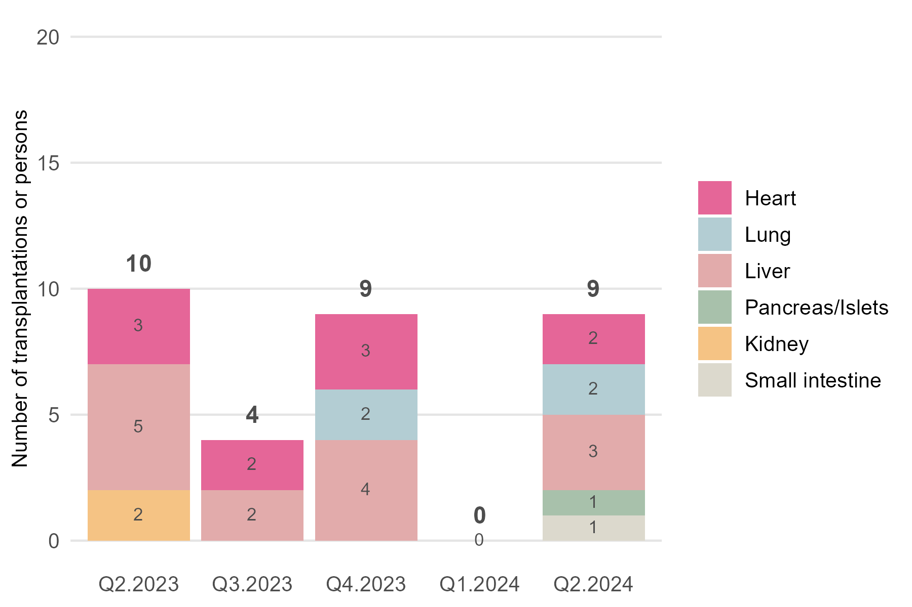
3.4 Heart transplants
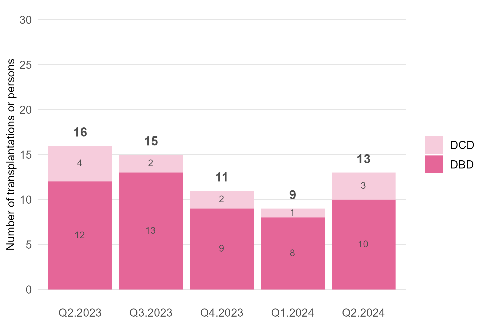
3.5 Lung transplants
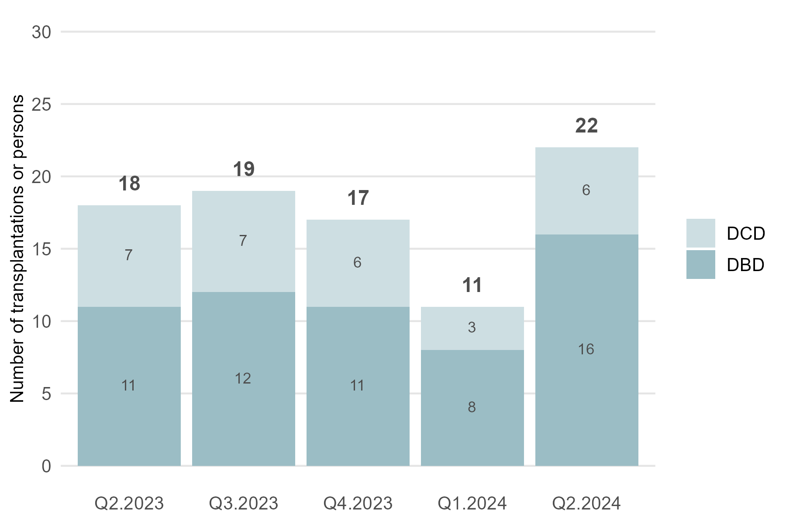
3.6 Liver transplants
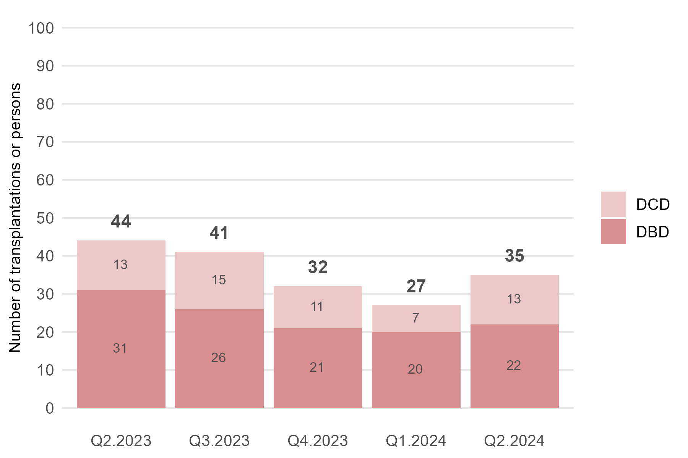
3.7 Kidney transplants
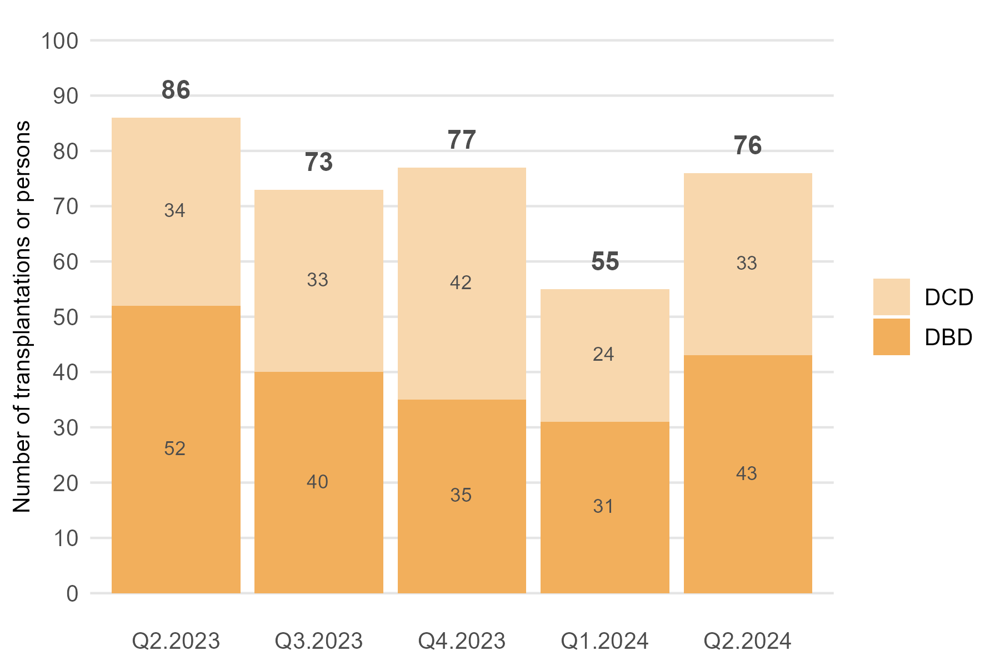
3.8 Pancreas/islet cell transplants
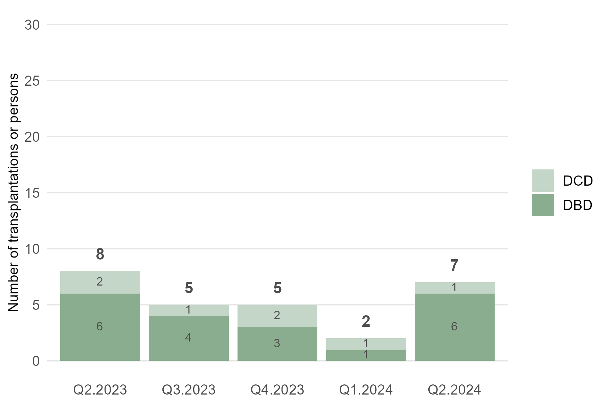